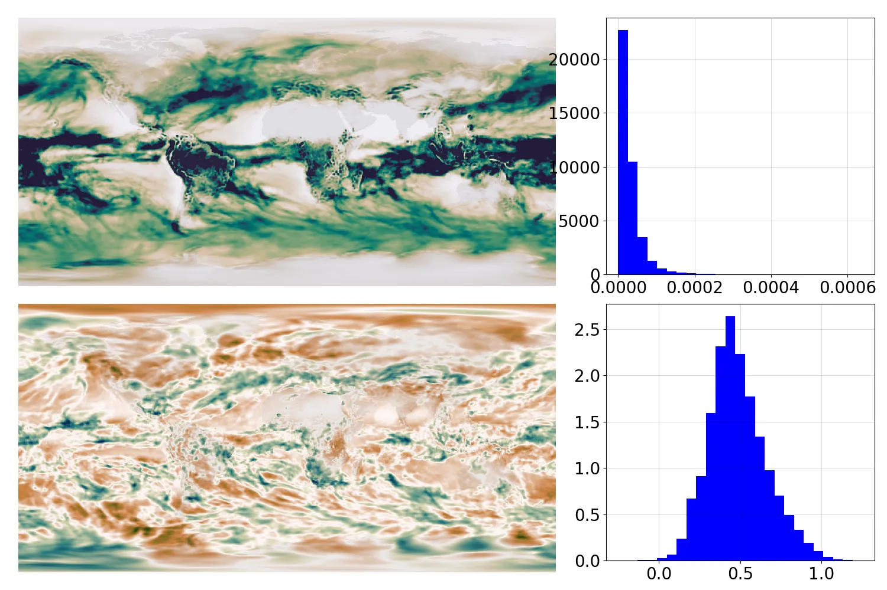
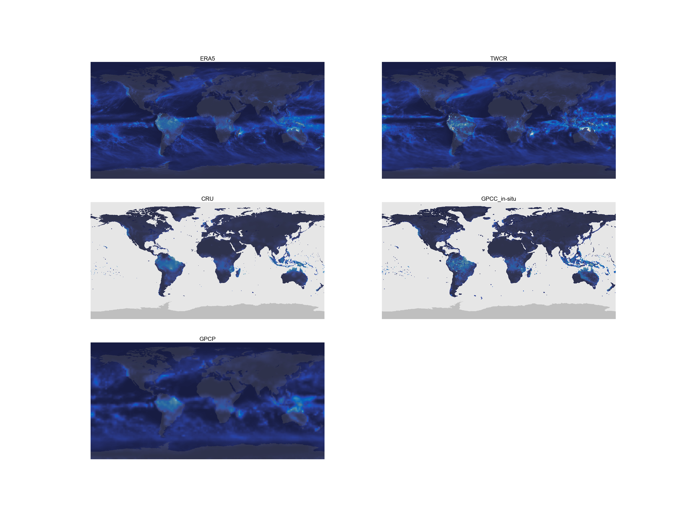
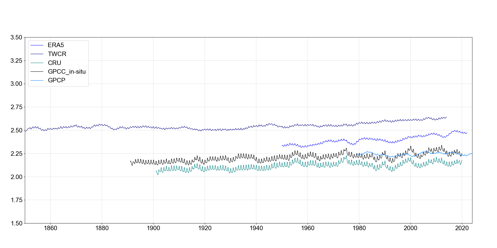
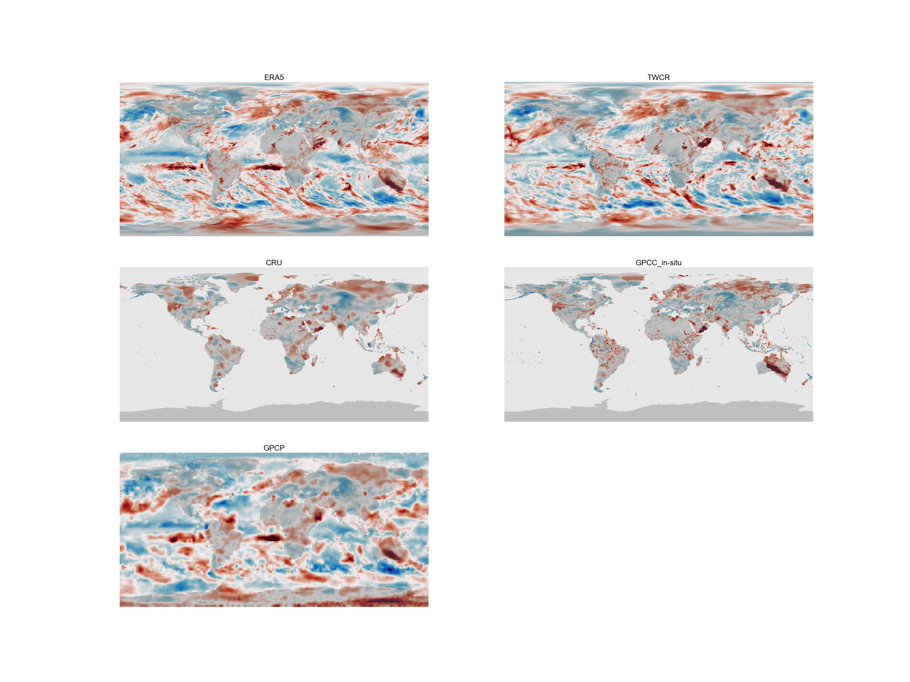

Normalization¶
We are not going to analyse or model the raw precipitation data (in m/s). First, we’re going to normalize it.

Raw 20CRv3 precipitation (top) and normalized equivalent (bottom) for one month. The top panel is green where there is lots of precipitation, the bottom panel is green where there is more precipitation than expected for that location and time of year. The data are the same in the two cases, but the normalized data is more informative, spatially homogenous, and normally distributed - better for almost every purpose. (Figure source).¶
Why normalize?¶
Raw precipitation varies enormously between times and places. This makes it difficult to analyse and model, and to compare between times and places. Even plotting it has challenges:

Raw precipitation fields for one month from five different datasets. (Figure source). This image uses a standard red-blue colour scheme, but you’ll have to look closely to see the red pixels (there’s a tropical storm off Madagascar). The massive heterogeneity in the data makes it difficult to see much.¶
Massive spatial heterogeneity also means that a global average is not very meaningful.

Global mean precipitation from the five datasets - smoothed with a 39-month running mean to make it easier to see the trends. (Figure source).¶
So before we do anything else, we normalize the data.
The normalization scheme used is modelled on the Standardized Precipitation Index (SPI). SPI is calculated by fitting a gamma distribution to the precipitation data and then, for each point to be normalized, finding the quantile of the data point in that gamma distribution, and replacing the data point with the value which has the same quantile in a standard normal. Effectively this transforms the data, from its original distribution to a standard normal distribution. A different gamma distribution is fitted for each calendar month, and for each grid point.
SPI is designed for fitting precipitation data, but the scheme works for many variables, and we’ve used it to normalize temperature, pressure, wind and humidity as well.
The gamma distribution fitted is defined by three parameters: the shape, scale and location. The shape and scale are the parameters of the gamma distribution, and the location is the minimum value of the data. The shape and scale are the parameters which are used to calculate the quantile of the data point in the gamma distribution. The location is used to shift the data to the left, so that the gamma distribution can be used to model the data.
So the Process of normalization is as follows:
Assemble the raw data as zarr files setup for efficient access as TensorFlow tf.tensors
From the raw data, estimate the gamma distribution parameters for each calendar month and grid point.
Use the fitted gamma distribution parameters to transform the raw data to normalized data, and assemble this as
zarr filesoftf.tensorsfor efficient access in analysis and modelling.
Each dataset used is normalized independently:
20CRv3: Assemble raw data, estimate normalisation parameters, assemble normalized data.
ERA5: Assemble raw data, estimate normalisation parameters, assemble normalized data.
CRU: Assemble raw data, estimate normalisation parameters, assemble normalized data.
GPCC: Assemble raw data, estimate normalisation parameters, assemble normalized data.
GPCP: Assemble raw data, estimate normalisation parameters, assemble normalized data.
.
Normalized data¶

Same figure as above, but showing the normalized precipitation fields. (Figure source).¶

Same figure as above, but showing the global-average normalized precipitation time-series. (Figure source).¶

{kind=link}
{kind=link}
{kind=link}
{kind=link}